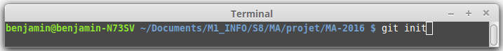
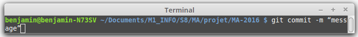
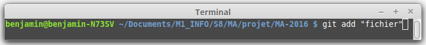
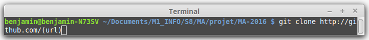
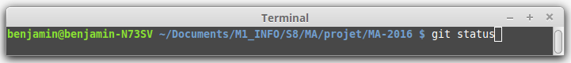
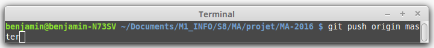
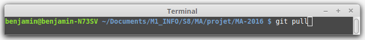

Commande de base Git
Introduction
Les 3 éléments fondamentaux de git:
-
Le répertoire de travail (Working directory)
-
La zone d’embarquement(Staging area)
-
Le repository
Le répertoire de travail vous permet d’apporter vos modifications sur les differents fichiers du projet.
La zone d’embarquement que certains appellent également index vous permet d’y placer les fichiers dont vous voulez valider, les modifications apportées.
Enfin repository contient les modifications validées.
Initialisation d’un dépôt git dans un répertoire existant

Cette commande permet de créer pour la toute première fois un depôt ou un repository git pour la gestion des versions du code tout au long du projet.
Il suffit de se placer dans le répertoire dans lequel on souhaite travailler pour le projet. Cela créé un répertoire git qui va contenir toutes les actions réalisées sur le projet. Dans ce répertoire on retrouve les 3 éléments décrit ci-dessus.
Validation des modifications

Afin de valider les modifications que vous avez apportées. Cette commande va enregistrer les modifications dans le repository et les valider. Le message permet de préciser quel genre de modification vous avez apporté au projet pour que les autres collaborateurs comprennent quelles ont été vos modifications. Ceci vous permet également de vous y référer ultérieurement.
Ajout de fichiers dans l’index ou zone d’embarquement (staging area)

Avant de faire un commit, il vous faut d’abord ajouter les fichiers dans l’index. Cette commande vous permet de faire ça. Vous pouvez également faire tout simplement "git add ." . Cette commande permet d’ajouter les fichiers se trouvant dans le repertoire de travail (working directory) à l’index.
Clonage d’un repository git existant

Vous pouvez également cloner un repository git existant au lieu de s'en créer un nouveau(git init). Url precise où se trouve le dépôt distant que l’on veut cloner (en SSH).
Vérifier l’état des fichiers

Cette commande permet de voir dans quel etat sont les fichiers. Dans le repertoire de travail, dans la zone d’embarquement (prêts à être commités), etc…
Pousser son travail sur un dépôt distant

En supposant que vous disposez d'un depôt distant comme GitHub par exemple, cette commande vous permet d’envoyer vos modifications validées vers ce dépôt et de les y enregistrer.
Récupérer le changement

Par opposition à "git push" que nous avons vu précédemment, cette commande vous permet de récupérer le changement qu’il y a eu lieu sur le dépôt distant.